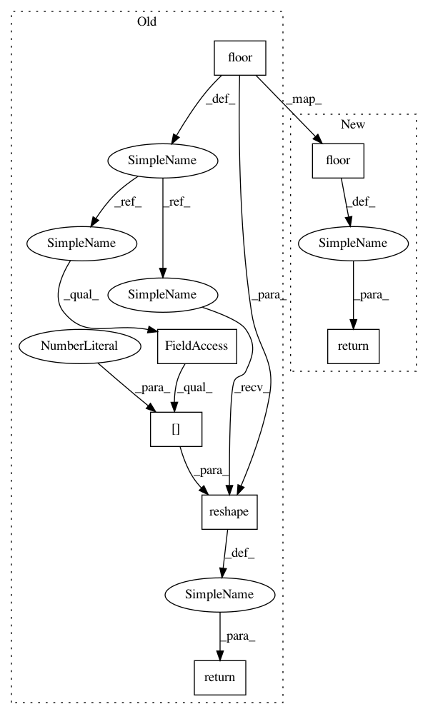

cbdd0d6690f9bf014ed428022dfda67be4b779f2,costcla/models/regression.py,CostSensitiveLogisticRegression,predict,#CostSensitiveLogisticRegression#,226
Before Change
def predict(self, x_test, cut_point=0.5):
//Calculate the prediction of a LogRegression
p = np.floor(self.predict_proba(x_test)[:, 1] + (1 - cut_point))
return p.reshape(p.shape[0], )
After Change
T : array-like, shape = [n_samples]
Returns the prediction of the sample..
return np.floor(self.predict_proba(X)[:, 1] + (1 - cut_point))
In pattern: SUPERPATTERN
Frequency: 3
Non-data size: 7
Instances
Project Name: albahnsen/CostSensitiveClassification
Commit Name: cbdd0d6690f9bf014ed428022dfda67be4b779f2
Time: 2014-08-17
Author: al.bahnsen@gmail.com
File Name: costcla/models/regression.py
Class Name: CostSensitiveLogisticRegression
Method Name: predict
Project Name: albahnsen/CostSensitiveClassification
Commit Name: ef8da66de9810b546451ced8c3f959ff193c6ce0
Time: 2014-08-17
Author: al.bahnsen@gmail.com
File Name: costcla/models/regression.py
Class Name: CostSensitiveLogisticRegression
Method Name: predict
Project Name: albahnsen/CostSensitiveClassification
Commit Name: aab7d40abb603c471132703e205148a8a87fe10b
Time: 2014-08-17
Author: al.bahnsen@gmail.com
File Name: costcla/models/regression.py
Class Name: CostSensitiveLogisticRegression
Method Name: predict